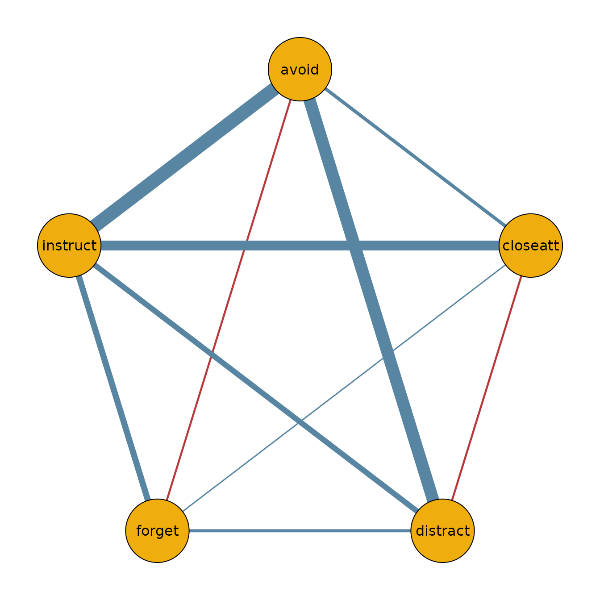

Introduction
The function bgmCompare() extends bgm() to
independent-sample designs. It estimates whether edge weights and
category thresholds differ across groups in an ordinal Markov random
field (MRF).
Posterior inclusion probabilities indicate how plausible it is that a group difference exists in a given parameter. These can be converted to Bayes factors for hypothesis testing.
Fitting a model
fit = bgmCompare(x = data_adhd, y = data_no_adhd, seed = 1234)Posterior summaries
The summary shows both baseline effects and group differences:
summary(fit)
#> Posterior summaries from Bayesian grouped MRF estimation (bgmCompare):
#>
#> Category thresholds:
#> parameter mean mcse sd n_eff Rhat
#> 1 avoid (1) -2.670 0.012 0.391 1134.777 1.003
#> 2 closeatt (1) -2.254 0.011 0.383 1146.809 1.000
#> 3 distract (1) -0.500 0.015 0.335 523.419 1.000
#> 4 forget (1) -1.600 0.012 0.319 748.625 1.003
#> 5 instruct (1) -2.427 0.016 0.406 627.847 1.001
#>
#> Pairwise interactions:
#> parameter mean mcse sd n_eff Rhat
#> 1 avoid-closeatt 0.968 0.019 0.472 628.604 1.006
#> 2 avoid-distract 1.701 0.011 0.354 1082.422 1.001
#> 3 avoid-forget 0.527 0.013 0.370 776.679 1.000
#> 4 avoid-instruct 0.381 0.017 0.465 740.624 1.000
#> 5 closeatt-distract -0.253 0.011 0.385 1274.102 1.001
#> 6 closeatt-forget 0.125 0.007 0.295 1699.559 1.000
#> ... (use `summary(fit)$pairwise` to see full output)
#>
#> Inclusion probabilities:
#> parameter mean sd mcse n0->0 n0->1 n1->0 n1->1
#> avoid (main) 1.000 0.000 0 0 0 1999
#> avoid-closeatt (pairwise) 0.784 0.412 0.017 282 150 150 1417
#> avoid-distract (pairwise) 0.384 0.486 0.013 827 404 404 364
#> avoid-forget (pairwise) 0.868 0.339 0.015 175 90 90 1644
#> avoid-instruct (pairwise) 0.991 0.094 0.004 11 7 7 1974
#> closeatt (main) 1.000 0.000 0 0 0 1999
#> n_eff Rhat
#>
#> 568.955 1.012
#> 1491.102 1
#> 486.829 1.007
#> 488.216 1.214
#>
#> ... (use `summary(fit)$indicator` to see full output)
#> Note: NA values are suppressed in the print table. They occur when an indicator
#> was constant (all 0 or all 1) across all iterations, so sd/mcse/n_eff/Rhat
#> are undefined; `summary(fit)$indicator` still contains the NA values.
#>
#> Group differences (main effects):
#> parameter mean sd mcse n_eff Rhat
#> avoid (diff1; 1) -2.559 0.746 1.000
#> closeatt (diff1; 1) -2.985 0.716 1.000
#> distract (diff1; 1) -2.508 0.687 1.000
#> forget (diff1; 1) -2.836 0.650 1.001
#> instruct (diff1; 1) -2.330 0.907 1.001
#> Note: NA values are suppressed in the print table. They occur here when an
#> indicator was zero across all iterations, so mcse/n_eff/Rhat are undefined;
#> `summary(fit)$main_diff` still contains the NA values.
#>
#> Group differences (pairwise effects):
#> parameter mean sd mcse n_eff Rhat
#> avoid-closeatt (diff1) 1.235 0.930 0.035 695.812 1.003
#> avoid-distract (diff1) 0.220 0.375 0.014 698.647 1.002
#> avoid-forget (diff1) 1.355 0.819 0.033 627.154 1.002
#> avoid-instruct (diff1) -2.798 1.018 0.042 601.226 1.001
#> closeatt-distract (diff1) -0.192 0.365 0.013 752.501 1.000
#> closeatt-forget (diff1) 0.126 0.286 0.011 667.634 1.001
#> ... (use `summary(fit)$pairwise_diff` to see full output)
#> Note: NA values are suppressed in the print table. They occur here when an
#> indicator was zero across all iterations, so mcse/n_eff/Rhat are undefined;
#> `summary(fit)$pairwise_diff` still contains the NA values.
#>
#> Use `summary(fit)$<component>` to access full results.
#> See the `easybgm` package for other summary and plotting tools.You can extract posterior means and inclusion probabilities:
coef(fit)
#> $main_effects_raw
#> baseline diff1
#> avoid(c1) -2.6699969 -2.559317
#> closeatt(c1) -2.2544313 -2.985099
#> distract(c1) -0.5004618 -2.507639
#> forget(c1) -1.6003700 -2.835712
#> instruct(c1) -2.4269033 -2.330300
#>
#> $pairwise_effects_raw
#> baseline diff1
#> avoid-closeatt 0.9684788 1.2349436
#> avoid-distract 1.7014554 0.2199725
#> avoid-forget 0.5267444 1.3547452
#> avoid-instruct 0.3809538 -2.7978242
#> closeatt-distract -0.2531416 -0.1923590
#> closeatt-forget 0.1251249 0.1256200
#> closeatt-instruct 1.5631557 0.6103778
#> distract-forget 0.4076576 0.2196354
#> distract-instruct 1.2726637 1.2378782
#> forget-instruct 1.1285737 0.7992822
#>
#> $main_effects_groups
#> group1 group2
#> avoid(c1) -1.3903385 -3.949655
#> closeatt(c1) -0.7618821 -3.746981
#> distract(c1) 0.7533575 -1.754281
#> forget(c1) -0.1825138 -3.018226
#> instruct(c1) -1.2617535 -3.592053
#>
#> $pairwise_effects_groups
#> group1 group2
#> avoid-closeatt 0.3510069 1.5859506
#> avoid-distract 1.5914691 1.8114417
#> avoid-forget -0.1506281 1.2041170
#> avoid-instruct 1.7798659 -1.0179583
#> closeatt-distract -0.1569621 -0.3493211
#> closeatt-forget 0.0623149 0.1879349
#> closeatt-instruct 1.2579668 1.8683446
#> distract-forget 0.2978399 0.5174753
#> distract-instruct 0.6537246 1.8916028
#> forget-instruct 0.7289325 1.5282148
#>
#> $indicators
#> avoid closeatt distract forget instruct
#> avoid 1.0000 0.7840 0.3840 0.8675 0.991
#> closeatt 0.7840 1.0000 0.3885 0.3610 0.611
#> distract 0.3840 0.3885 1.0000 0.3950 0.837
#> forget 0.8675 0.3610 0.3950 1.0000 0.715
#> instruct 0.9910 0.6110 0.8370 0.7150 1.000Visualizing group networks
We can use the output to plot the network for the ADHD group:
library(qgraph)
adhd_network = matrix(0, 5, 5)
adhd_network[lower.tri(adhd_network)] = coef(fit)$pairwise_effects_groups[, 1]
adhd_network = adhd_network + t(adhd_network)
colnames(adhd_network) = colnames(data_adhd)
rownames(adhd_network) = colnames(data_adhd)
qgraph(adhd_network,
theme = "TeamFortress",
maximum = 1,
fade = FALSE,
color = c("#f0ae0e"), vsize = 10, repulsion = .9,
label.cex = 1, label.scale = "FALSE",
labels = colnames(data_adhd)
)